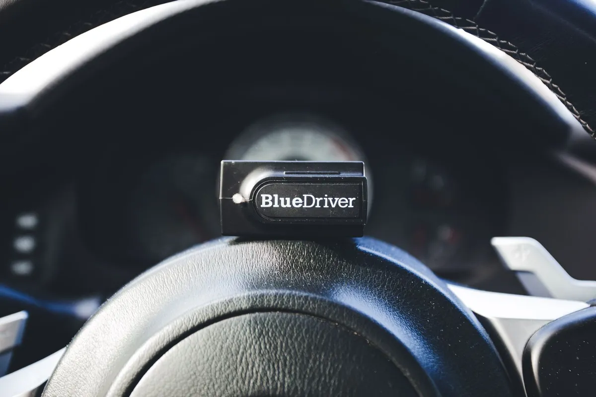

Get your safety camera reading the road correctly again after a windshield swap.
ADAS calibration in Melbourne, FL resets the forward-facing camera mounted behind your rearview mirror after a windshield replacement, so features like lane departure warning, automatic emergency braking, and adaptive cruise control keep reading the road accurately. Most vehicles built since around 2018 rely on this camera, and even a fraction of a degree of misalignment can throw off how it interprets what is ahead of the car.

Calibration falls into two categories, and many vehicles need both. Static calibration uses printed targets set up at exact measured distances in front of the car, typically inside a shop or a large, level driveway, while the camera system re-learns its reference points against those targets. Dynamic calibration involves driving the vehicle at a specific speed range on well-marked roads so the camera can recalibrate itself against real lane lines and traffic.
A scan tool connected to the vehicle’s computer confirms the calibration completed successfully and clears any related warning lights once the process finishes.
Any time the windshield is replaced on a vehicle with a camera mounted near the mirror, calibration is needed, no exceptions. It is also worth checking after a front-end collision, a suspension repair, or any work that could shift the car’s ride height, since all of those can throw off the camera’s reference angle even without touching the glass itself.
A dashboard warning light referencing lane assist, forward collision, or a similar safety system is the clearest sign calibration did not happen, or did not take, after recent work on the vehicle.
The camera is mounted to a bracket that sits directly against the windshield glass, and its entire calibration depends on that exact position and angle relative to the road ahead. Even a new windshield installed correctly sits at a very slightly different angle than the one it replaced, because no two pieces of glass, or two installations, are identical down to a fraction of a degree.
That tiny shift is enough to throw off a system designed to measure distance and lane position with real precision. The calibration process exists specifically to correct for that shift and confirm the camera is reading the world exactly as the manufacturer intended.
The manufacturer, model year, and specific camera system installed all determine whether a vehicle needs static calibration, dynamic calibration, or both. Some brands require a controlled indoor space with exact lighting and target placement, while others are designed for a dynamic road calibration that simply needs clear lane markings and a stretch of road at highway speed.
Weather plays a role too. Dynamic calibration needs decent visibility and dry pavement to read lane lines properly, so a Melbourne downpour can push that part of the job to a drier window later the same day.
Getting a new windshield first? See how windshield replacement works before calibration begins.
If your vehicle has lane departure warning, automatic emergency braking, adaptive cruise control, or a similar driver-assist feature, and you recently had the windshield replaced, it almost certainly needs calibration. A quick look at the mirror mount for a small camera housing usually confirms it.
The camera may still function, but its reference point has shifted slightly with the new glass. That can mean lane-keeping assist drifting off center, automatic braking triggering late or not at all, or warning lights appearing on the dashboard.
For most common vehicles in the Melbourne area, yes. We calibrate on site right after the new windshield is installed, so the car leaves with both jobs finished.
No. Each manufacturer sets its own calibration procedure and target requirements, and some require a static calibration using printed targets while others need a dynamic road test at a specific speed. We match the process to your specific make and model.